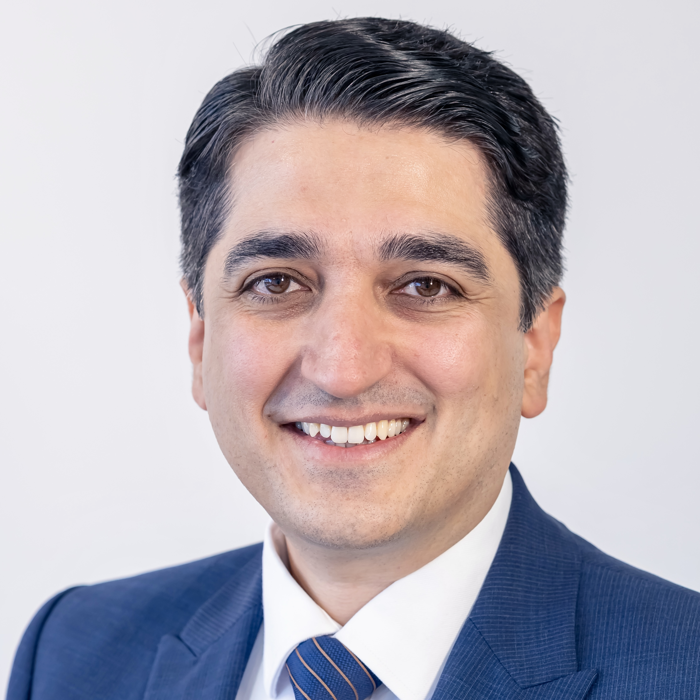
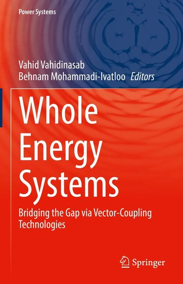
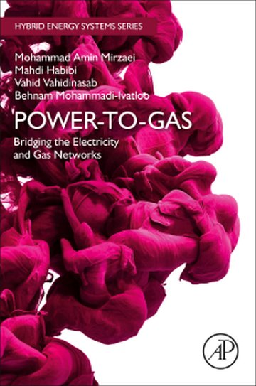
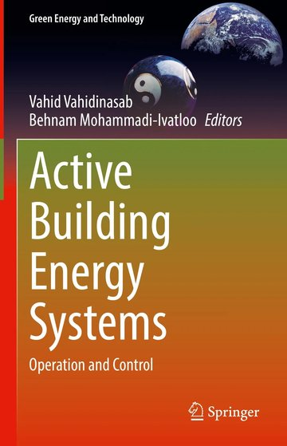
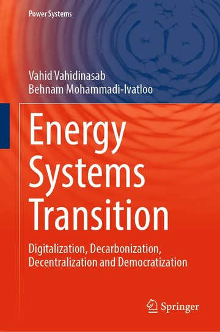
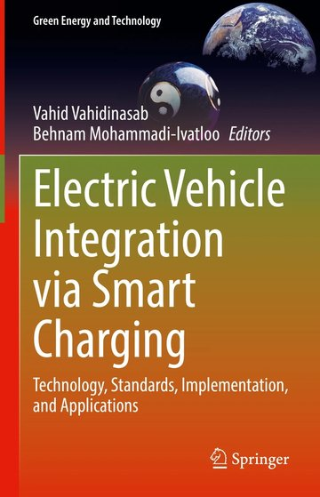
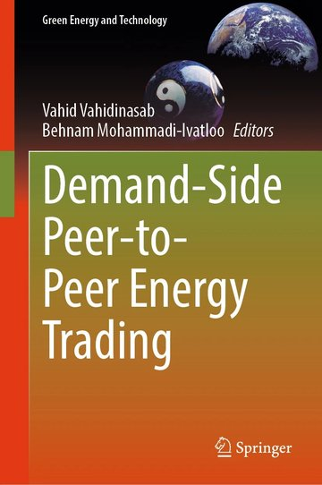
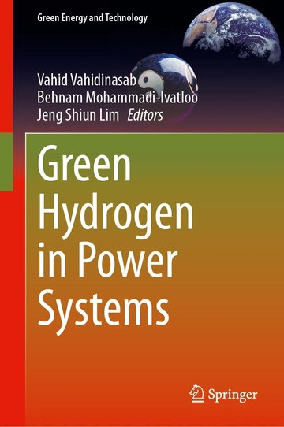

// SMART GRIDS
Smart grids & microgrids
Designing resilient, self-sustaining local energy systems that keep power flowing when the wider grid is under stress.
Professor and Chair in Sustainability / University of Salford
I build the models, markets and tools that make clean energy systems work, and lead the research groups, labs and national programmes that turn them into practice.

Bibliometrics: Google Scholar, June 2026 · h-index 39, i10-index 95
Vahid Vahidinasab is Professor and Chair in Sustainability at the University of Salford, working where energy systems, markets, policy and people meet. Across more than twenty years in academia, industry and national research leadership, he has built the models, markets and tools that help clean energy systems run, and led the teams, labs and programmes that put them to work. His research centres on self-sustaining, resilient communities that are fair and affordable, spanning smart grids, local flexibility markets, electric vehicles and whole-energy systems. He is an IEEE Senior Member, an author of seven books, and an editor of leading international journals.
Building the tools that make energy markets fair, resilient and open to everyone.
Designing resilient, self-sustaining local energy systems that keep power flowing when the wider grid is under stress.
Giving neighbourhoods the flexibility and control to run their own energy, and put people at the centre of the net-zero shift.
Market designs that let households and communities trade energy directly, securely and privately, and get paid fairly for flexibility.
Turning mass electric-vehicle uptake into an asset for the grid through smart charging and vehicle-to-everything (V2X) technology.
Autonomous forecasting and control of generation, demand and storage, tuned to what real households and operators actually need.
Bridging electricity, gas and hydrogen networks through sector coupling, power-to-gas and green hydrogen for a flexible low-carbon system.
Two decades of research and senior leadership across UK and international energy institutions.
Leading sustainability research and strategy across the business school, working at the intersection of energy systems, policy, markets and people.
Founded and directed NTU-GridLab, led the Sustainable Energy Research Group, and served as School Research Impact Champion, overseeing impact case studies for the REF submission in Computer Science and Engineering.
Delivered flagship EPSRC and EU energy programmes on smart distribution grids, active buildings and vector-coupling storage.
Designed a first-of-its-kind national research programme with 20 leading universities and a lasting industry-funded research scheme still in use, leading a team of around 100 staff and six directors.
Restructured the country's largest electric power research institute into 20 research departments, each with industry and academia oversight built around equality, diversity and inclusion.
First permanent academic post: built a research and teaching profile in smart grids, power markets and AI for energy, supervising 80+ theses and projects, and founded a smart-energy laboratory that remains active today.
Where it started: built AI-based load and electricity-price forecasting and optimal bidding tools for national grid and regional electricity companies, several still in operational use.
A curated highlight from a body of 200+ books, articles and technical reports.
Full publication record on Google Scholar and ORCID.

Whole Energy SystemsSpringer · 2021
Power-to-GasElsevier · 2023
Active Building Energy SystemsSpringer · 2022
Energy Systems TransitionSpringer · 2023
EV Integration via Smart ChargingSpringer · 2022
Demand-Side P2P Energy TradingSpringer · 2023
Green Hydrogen in Power SystemsSpringer · 2024Research delivered at pilot and national scale, and the tools and labs it produced.
New tools, models and technology for mass electric-vehicle deployment enabled by vehicle-to-everything (V2X): data-driven support for local communities, customer-centric flexibility markets and TSO-DSO flexibility.
A laboratory founded to develop open, data-driven tools for local communities, design local flexibility markets, and coordinate flexibility between transmission and distribution operators.
Control and optimisation of distributed energy (renewables, storage and EVs) at building and network level, making energy-positive buildings work economically while keeping occupants comfortable.
One of Europe's largest smart-distribution-grid projects, spanning 30 partners. Built an Integrated Simulation Environment that lets decision-makers test planning and operation strategies for future distribution networks.
Defined vector-coupling storage based on power-to-gas, linking the gas and electricity networks to give system operators greater flexibility.
Showed how power-to-gas as a vector-coupling technology can relieve heavily constrained electricity networks and improve whole-system efficiency while cutting cost.
Let's build the energy system that comes next.
v.vahidinasab@salford.ac.ukSalford Business School · University of Salford · Manchester M5 4WT, UK